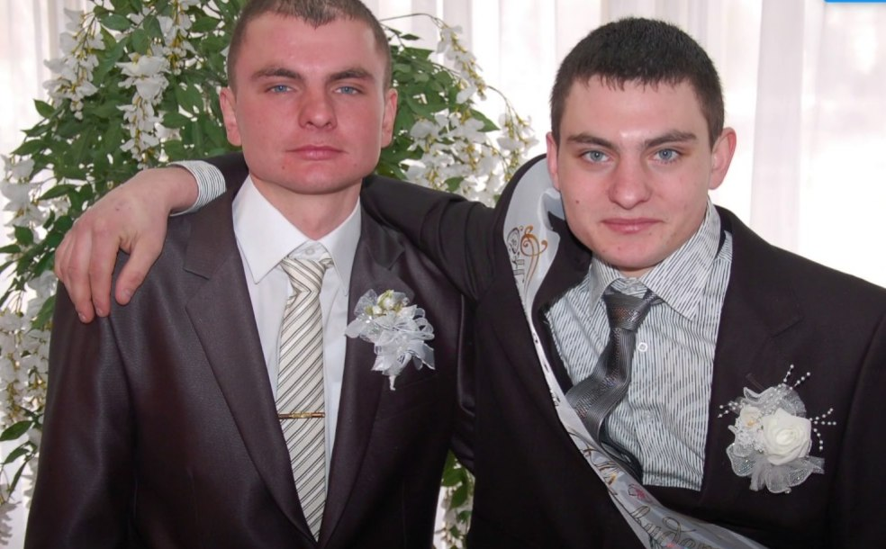
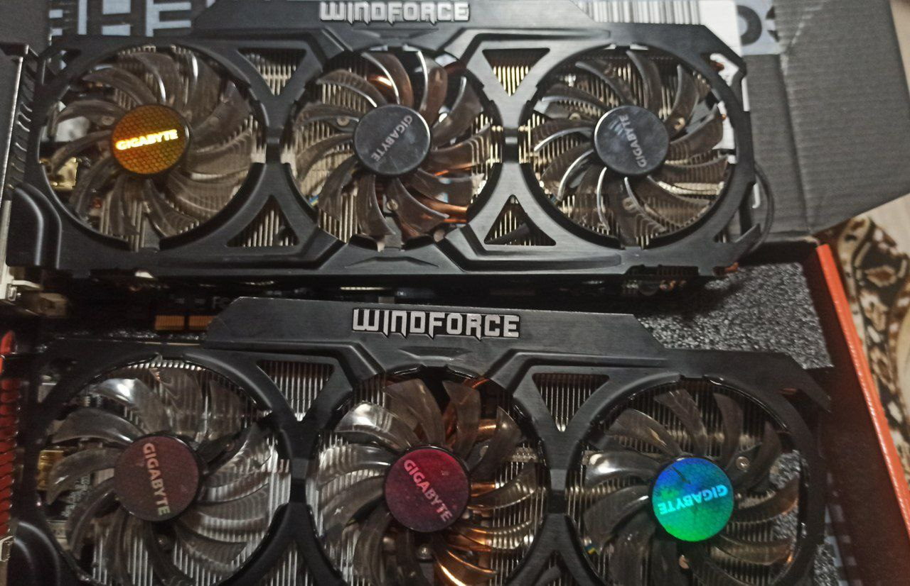
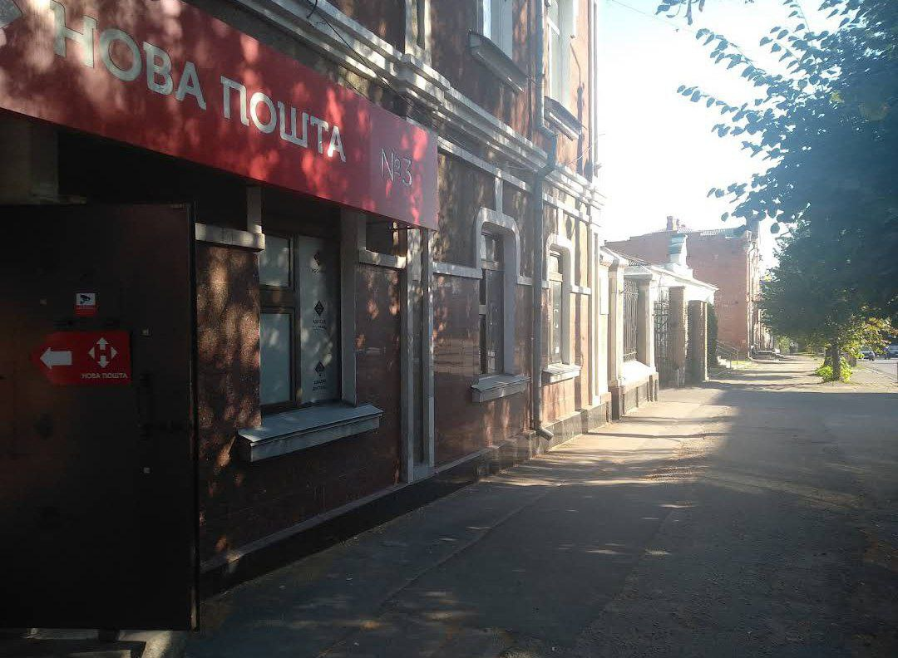

Матеріали архіву
(ЗАКРІПЛЕНО) ПРОФІЛЬ
Ім’я: Майдак Микита Я▉▉▉вович
Дата народження: 15.05.2004
Країна: Україна
Громадянство: України (підтверджено), Ізраїлю (підтверджено), Таджикістану (підтверджено), ▉▉▉▉▉▉
(підтверджено)
Статус: Активний суб’єкт спостереження
Місцезнаходження: НЕ ВСТАНОВЛЕНО
Відомі псевдоніми:
n1ki
nibbi
r....... all DAY
make-a-wish founder
cтapший cepжaнт гeйcoн
mr.money in the bank
ебу гомосятин
▉▉▉▉▉▉
▉▉▉▉▉▉▉▉
▉▉▉
ruining needle mover
johnny538
ВКонтакте: https://vk.com/id221895721
Steam: https://steamcommunity.com/id/vova_nybas, https://steamcommunity.com/id/niggerstrynabeatme, https://steamcommunity.com/profiles/76561199047732281
OnlyFans: ▉▉▉▉▉▉▉▉▉

1) КООРДИНОВАНА РОЗРОБКА ТА ПОШИРЕННЯ НЕЗАКОННОГО ПЗ
Попередні матеріали свідчать, що у зимовий період 2025-26 років в тематичних інтернет-спільнотах (4ch, Dread, OwnedCore, MPGH та інші) розповсюджувалось несанкціоноване програмне забезпечення під назвою «OwnerPoint», що позиціонувалось як інструмент для отримання переваги в комп’ютерній грі Counter-Strike (так звані «чіти»). Методи поширення включали рекламні матеріали з демонстрацією функціоналу програмного забезпечення, аудіовізуальний супровід та елементи емоційного впливу на потенційних користувачів.
За наявними даними, до координації зазначеної діяльності міг бути причетний суб’єкт n1ki, який, ймовірно, був власником ідеї та взаємодіяв із особою, ідентифікованою як Владимир Ебланский.Окремі джерела також вказують на можливу участь особи під ім’ям Данил Дергочленов, яка, за попередньою оцінкою, могла виконувати функції тестування та поширення програмного забезпечення.
Механізм отримання коштів не обмежувався лише продажем читів для Counter-Strike. Припускається, що після придбання програмного забезпечення платіжні дані користувачів могли використовуватись для подальшого технічного спостереження за їхнім фінансовим станом. Після визначення днів із найбільш сприятливою платоспроможністю, ймовірно, запускались автоматизовані процедури повного вилучення коштів.
За попередньою оцінкою фінансових аналітиків, сукупне збагачення групи могло становити близько 45 тисяч 700 доларів США у криптовалютному еквіваленті. Після завершення активної фази операції угруповання раптово припинило будь-яку активність. Профілі, пов’язані з розповсюдженням програмного забезпечення, були видалені, а цифрові сліди - частково зачищені. Мотиви дій учасників на даний момент остаточно не встановлені. Подальша доля отриманих коштів також залишається невідомою.
2) МАТЕРІАЛИ ЩОДО ОРГАНІЗАЦІЇ ТА ФІНАНСУВАННЯ СИЛОВОЇ СТРУКТУРИ НЕВСТАНОВЛЕНОГО ПРИЗНАЧЕННЯ
Команді кібербезпеки вдалось частково реконструювати ланцюг криптовалютних транзакцій, пов’язаних із суб’єктом n1ki. За наявними даними, з метою ускладнення відстеження походження коштів використовувалась багатоетапна схема переказів між різними криптовалютними рахунками.
Попри це, окремі фінансові потоки вдалось зіставити з діяльністю об’єктів на території міста Умань, зокрема в районі стадіону «Уманьферммаш». За попередньою оцінкою, у зазначеній локації функціонують закриті тренувальні групи, так звані «банки», офіційно представлені як спортивні секції.
За окремими свідченнями, діяльність груп має системний та регулярний характер. Заняття проводяться щонайменше тричі на тиждень, переважно у вечірній час, у форматі закритих тренувальних зборів. Програма включає інтенсивну фізичну підготовку, вправи на витривалість, контактні спаринги між учасниками, а також елементи командної координації та дисциплінарного підпорядкування. Інформація про проведення окремих занять передається у приватному порядку, без публічного анонсування. Особливу увагу викликає те, що учасниками зазначених формувань, за наявними даними, є виключно повнолітні чоловіки.
Окремої уваги заслуговує особа, відома серед учасників під прізвиськом «Миха Таксовоз», яка, за попередніми даними, виконує функції основного інструктора фізично-силової підготовки. За наявними свідченнями, саме через нього проходила ▉▉▉▉▉▉▉▉▉▉▉▉▉ ▉▉▉▉▉▉ ▉▉▉▉▉. Його роль не обмежується проведенням тренувань: окремі джерела вказують на виконання ним дисциплінарних функцій, включно з контролем внутрішнього порядку, допуском до окремих занять та оцінкою фізичної придатності учасників.

Додаткові свідчення також вказують на наявність вираженого ідеологічного компоненту в межах тренувального процесу. За окремими даними, під час занять систематично транслюється заздалегідь визначений аудіоматеріал, самостійний вибір музичного супроводу учасниками не допускався. Зміст окремих матеріалів, за попередньою оцінкою, може бути спрямований на формування агресивних установок, культивування нетерпимості до окремих релігійних та соціальних груп, а також посилення групової лояльності через емоційно-психологічний вплив.
▉▉▉▉▉▉▉▉ ▉▉▉▉▉▉▉▉▉▉▉▉▉▉▉▉ ▉▉ ▉▉▉▉▉▉ ▉▉▉▉▉▉ ▉▉▉▉▉▉▉▉▉▉▉▉▉ ▉▉▉▉▉▉▉▉ дають підстави припускати, що суб’єкт n1ki може виступати не лише як організатор фінансової схеми по збуту «читів», а і як особа, причетна до організації та фінансування зазначених груп.
Подальший аналіз матеріалів також розширює ймовірну роль особи під ім’ям Данил Дергочленов, яка раніше фігурувала у зв’язку з тестуванням та поширенням програмного забезпечення «OwnerPoint». За попередньою оцінкою, його функції могли не обмежуватись технічним супроводом, а включати пошук та первинний відбір потенційних учасників для подальшого залучення до закритих тренувальних груп.
У межах цієї діяльності, за наявними даними, Дергочленов міг контактувати з особами, ідентифікованими як брати Жибери. Наявний фотоматеріал, зроблений під час однієї з таких зустрічей, підтверджує факт особистого контакту між сторонами. Водночас зміст переговорів, характер можливих домовленостей та конкретна роль братів Жиберів у функціонуванні зазначеної структури на даний момент остаточно не встановлені.

Сукупність наявних матеріалів - включно з фінансовими транзакціями, характером підготовки, внутрішньою дисципліною, ознаками ідеологічного впливу та ймовірною системою вербування нових учасників - дає підстави розглядати зазначену структуру не як звичайне спортивне об’єднання, а як силове формування невстановленого призначення. Подальший аналіз вказує на можливий перехід окремих учасників до діяльності поза межами первинної інфраструктури.
3) МАТЕРІАЛИ ЩОДО ВЕРБУВАННЯ ОСІБ ПІДВИЩЕНОЇ ФІЗИЧНОЇ НЕБЕЗПЕКИ
Подальший аналіз матеріалів дозволив перейти від вивчення самої структури до ідентифікації осіб, які, за попередньою оцінкою, могли бути залучені до неї через контакти, пов’язані з братами Жиберами. За наявними даними, їхній відбір до «банки», імовірно, здійснювався з урахуванням фізичних, психологічних та поведінкових характеристик.
Пашка «Звєрь»
Пашка «Звєрь» становить окремий інтерес як фігурант із виражено хаотичним психоповедінковим профілем, чия життєва траєкторія свідчить не про послідовну мотивацію, а про стабільну схильність до участі у деструктивних подіях із сумнівною раціональною доцільністю.

За окремими свідченнями, у 2014 році фігурант міг брати участь у подіях 2 травня в Одесі на боці проросійськи налаштованих учасників конфлікту, де, ймовірно, був залучений до підготовки запалювальних засобів типу «коктейль Молотова».
Окремий епізод біографії фігуранта пов’язаний із періодом вираженої залежності від метадону, в межах якого Пашка «Звєр» фігурував у справі щодо викрадення сільськогосподарської техніки та згодом був направлений до спеціалізованого психіатричного закладу на вул. Кульпарківській у Львові.
З точки зору поведінкового аналізу, фігурант демонструє поєднання хронічної конфліктної присутності, дефіциту причинно-наслідкової самооцінки, низького рівня самозбереження та високої готовності до хаотичного виконання зовнішніх вказівок, що, за попередньою оцінкою, могло становити практичний інтерес для осіб, причетних до вербування.
Микола Чебуревич
Обсяг доступної інформації щодо Миколи Чебуревича залишається вкрай обмеженим, однак окремі епізоди вказують, що він міг становити практичний інтерес для осіб, причетних до діяльності «банок».
За наявними свідченнями, Чебуревич міг бути пов’язаний із відвідуванням нелегальних боїв на території міста Умань.
Додатковий інтерес викликає той факт, що в осінній період 2025 року місцеві ультрас здійснювали неформальні спроби його розшуку, включно з розповсюдженням друкованих матеріалів із його зображенням у публічному просторі. Причини такого інтересу, характер можливого конфлікту та роль самого Чебуревича в зазначених подіях на даний момент остаточно не встановлені.

«Шляпа»
За результатами аналізу цифрових слідів, оперативній групі вдалось отримати доступ до соціальних платформ, асоційованих із фігурантом, який за власною ініціативою, без ознак примусу чи зовнішнього психологічного впливу, використовує оперативне псевдо «Шляпа»; встановлено, що фігуранта звати Андрій. Вивчення переписки, візуальних матеріалів та ознак поведінкової активності дозволило дійти попереднього висновку, що Андрій перебував під вираженим мотиваційно-психологічним впливом, унаслідок чого здійснив вступ на напрям фізичного виховання до УДПУ.

Подальший моніторинг виявив ознаки потенційного самостійного залучення Андрія до так званої «банки» - структури сумнівного організаційного призначення. Завдяки своєчасному перехопленню цифрового запиту в соціальній мережі Instagram та проведенню превентивних інформаційно-роз’яснювальних заходів зазначене залучення було успішно попереджено.

За попередньою оцінкою, хлопець не демонструє стійкої злочинної мотивації, натомість характеризується підвищеною навіюваністю, фізичною активністю та готовністю до виконання вправ незрозумілого функціонального призначення у нічний період доби.

Аналіз наявних матеріалів не виявив ознак його зв’язку з особами, ідентифікованими як брати Жибери; зафіксована активність, найімовірніше, не мала деструктивного умислу та являла собою форму побутово-розважальної взаємодії фігуранта зі своїм братом.
4) КООРДИНАЦІЯ НЕФОРМАЛЬНИХ КОНТАКТНИХ ЗІТКНЕНЬ
Після аналізу фінансових потоків, пов’язаних із n1ki, та реконструкції діяльності закритих тренувальних груп в Умані виникає новий пласт питань. Якщо на попередніх етапах йдеться про гроші, фізичну підготовку та формування стабільного кола учасників, то зараз простежується наступний тривожний розвиток цієї історії.
Окремий поворот - знайомство з братами Жиберами. Саме після цього до кола осіб, пов’язаних із «банками», потрапляють Микола Чебуревич та Пашка «Звєр», у внутрішньому середовищі їх, за окремими свідченнями, могли розглядати як своєрідних «чекістів» І саме тут характер історії змінюється.
Судячи з наявних матеріалів, після етапу вербування структура перейшла до організації неформальних контактних поєдинків - так званих «забивів на місці» (сленгового позначення ситуацій, коли особу навмисно викликають у певну локацію для фізичного конфлікту), комунікація щодо яких, імовірно, відбувалась у закритому колі через особисті повідомлення та приватні контакти.
Формально окремі епізоди ще можна було б пояснити звичайними побутовими конфліктами або «з’ясуванням стосунків», однак у місті починають фіксуватись повторювані фізичні зіткнення з представниками місцевого ультрас-середовища, а також іншими особами, які не належать до внутрішнього кола. Сам по собі окремий конфлікт ще можна пояснити випадковістю. Але в контексті вже відомої інфраструктури - тренування, фінансування, координація, підбір учасників - це дедалі більше виглядає як частина більшої системи.
Одна з робочих версій полягає в тому, що такі конфлікти використовуються як інструмент радикалізації учасників, зміцнення внутрішньої лояльності та практичної перевірки готовності до подальших силових дій.
Паралельно навколо основного ядра з’являються нові фігури: вже відомий Владимир Ебланский, Владимир Солевоз, Владимир Задрушкин та Володимир Грех.
Кінцева мета залишається невідомою, але наявні матеріали дають підстави припускати, що це може бути не просто організація фізичних конфліктів, а підготовка до більш масштабних дій, які можуть виходити за межі міста Умань.
5) «ВИКЛИК МАЙСТРА»
Перша стадія реалізації операції
Наступний етап діяльності організованого злочинного угруповання n1ki, демонструє помітний перехід від фізичних конфліктів до більш складних інформаційно-розвідувальних схем.
За реконструйованою версією подій, особи Владимир Ебланский та Данил Дергочленов могли бути причетними до координованого поширення провокативних повідомлень у соціальних мережах TikTok, Instagram та Facebook, зміст яких зводився до нав’язування тези про те, що у місті Бровари проживають виключно малозабезпечені мешканці без цінного майна.
Подібні публікації, за наявними ознаками, штучно посилювались мережею бот-акаунтів, адміністрування яких, здійснював Владимир Задрушкин. Після досягнення необхідного рівня охоплення місцеві користувачі починали емоційно спростовувати зазначені твердження, у коментарях самостійно розкриваючи інформацію, що становила потенційний оперативний інтерес: назви вулиць, райони проживання, описи заможних сусідів, а подекуди - й конкретні адреси.
Після етапу первинного збору даних інформація, за наявними матеріалами, передавалась Владимиру Солевозу, який через локальні контакти міг залучати осіб із вираженою наркотичною мотивацією для польової перевірки адрес. Їхнім завданням могла бути базова розвідка: візуальна оцінка об’єкта, перевірка присутності мешканців та збір непрямих ознак платоспроможності.
Після цього адреси знову потрапляли до Владимира Ебланського, який, імовірно, займався подальшим OSINT-аналізом: встановленням номерів телефонів, цифрових профілів та супутньої персональної інформації.
Фінальний етап першої стадії, судячи з реконструкції, виконував Володимир Грех, який шпигував за заданими адресами, телефонувавши на встановлені номери під різними приводами - від фіктивних доставок до технічних уточнень - з метою підтвердження присутності або відсутності власників за адресою, а також перевірки реакції потенційної цілі. Вивчаючи їх поведінку, він міг робити висновки щодо їхньої платоспроможності, рівня обізнаності про безпеку та потенційної вразливості, часу відстуності та присутності.
Додатково Ебланский та Дергочленов, здійснювали системне просування бренду, попередньо зареєстровану компанію «Brovary Doors», формуючи його впізнаваність як доступного та надійного сервісу. Таким чином перша стадія виконувала одразу дві функції: збір інформації про потенційні цілі та створення попередньої довіри до компанії, яка фігурує на наступних етапах операції.
Друга стадія реалізації операції
Паралельно з першою стадією реалізовувалась друга, одноразова фаза операції, метою якої було усунення локальних конкурентів, здатних завадити подальшій реалізації схеми. У цьому контексті фігурують уже знайомі Пашка «Звєр» та Микола Чебуревич, які раніше вже розглядались як силовий ресурс структури. Наявні свідчення вказують не на випадкові конфлікти, а на цілеспрямоване очищення середовища перед запуском основної фази.
Третя стадія реалізації операції (Циклічна)
Після завершення підготовчих етапів група перейшла до фінальної або циклічної, найбільш масштабної фази операції. Значна частина учасників тренувальних груп була централізовано доставлена до міста Бровари автобусним транспортом та розселена невеликими автономними групами по чотири особи у різних гуртожитках, квартирах та тимчасових об’єктах проживання.
Відомо щонайменше про п’ять таких груп: Green Pigs Team, Harley Vinster, RED LION, Kryvbas та Sanity. Формально всі учасники були офіційно працевлаштовані у Brovary Doors, що створювало зовнішнє враження легальної комерційної діяльності.
Після усунення конкурентів кожній групі, судячи з реконструкції, закріплювалась окрема територія діяльності: Торгмаш, Геологорозвідка, Симоненка, Купава та Черьомушка.
На основі інформації, зібраної Володимиром Грехом - зокрема щодо присутності або відсутності власників, наявності камер спостереження, активності сусідів та загального рівня контролю за об’єктом - підготовлені учасники могли здійснювати контрольоване пошкодження замкових механізмів або дверних конструкцій.
Ключовим елементом схеми було спричинення у дверей технічної несправності, без ознак стороннього втручання. У таких умовах власники самостійно звертались до Brovary Doors для заміни дверей або встановлення нових конструкцій, зважаючи на відсутність конкурентів, агресивне просування бренду, а також сформовану репутацію доступного та якісного сервісу.
Після завершення монтажу, за цією ж версією, частина встановлених дверних систем могла комплектуватись із спеціально модифікованими механізмами доступу. Це дозволяло учасникам операції повертатись до об’єкта через певний час та здійснювати проникнення без видимих слідів злому.
Попри масштаб реконструйованої операції, суб’єкт, відомий як n1ki, досі офіційно не встановлений. Втім, є підстави вважати, що відповідь на це питання давно відома щонайменше одному з безпосередніх учасників описаних подій. Питання лише в тому, коли саме ця інформація перестане бути приватною.
6) «СЛІПА» ФЕМІДА БРОВАР
Після реалізації операції «Brovary Doors», за наявною реконструкцією, всередині структури, пов’язаної з n1ki, починають проявлятись ознаки внутрішнього конфлікту.
За попередньою версією, предметом протистояння став розподіл впливу, ресурсів та контролю над сформованою інфраструктурою. Особливу напругу, судячи з доступних матеріалів, створило загострення відносин між ядром групи, асоційованим із n1ki, та братами Жиберами, які раніше фігурували як зовнішні союзники та постачальники силового ресурсу.

У межах конфлікту, за наявними свідченнями, Пашка «Звєр» та Микола Чебуревич залишились лояльними до структури n1ki, що фактично означало розрив із табором Жиберів. Після цього риторика конфлікту різко змінюється. Якщо раніше йшлося про локальну співпрацю, то тепер з’являються прямі погрози силового перегляду зон впливу. За реконструйованою версією, брати Жибери заявляли про намір «відбивати райони», фактично оскаржуючи сформований після операції баланс.
Подальший розвиток подій виглядає особливо показовим.
Судячи з наявних матеріалів, перша ж спроба практичної реалізації цієї стратегії завершилась провалом. Під час проникнення до одного з об’єктів, який, за наявною версією, мав стати початком силового повернення контролю, групу вже очікували правоохоронці.
Обставини цього епізоду викликають окремі питання. Надто швидка реакція, точність прибуття та характер самого затримання породжують припущення про можливий витік інформації або наявність внутрішнього джерела, яке передало дані завчасно.
Подальші судові матеріали вказують на епізод, у межах якого брати Ігор та Роман Жибери було засуджено до 7 років позбавлення волі за ч. 3 ст. 15, ч. 4 ст. 187 КК України - замах на розбій, вчинений організованою групою.
У межах робочої версії розслідування не виключається, що цей епізод став не випадковим вуличним конфліктом, а фінальною точкою внутрішнього переділу впливу, у якому одна зі сторін виявилась на кілька кроків попереду.
Примітка: !!!Джерело!!! Є епізод бійки між групами «банки» з однієї сторони братів Жиберів, що не фігурує у файлах розслідування.
7) ІНФОРМАТОР
У межах подальшого розслідування оперативній групі вдалось встановити контакт із конфіденційним джерелом, яке, за наявною оцінкою, перебуває у безпосередній близькості до внутрішнього кола n1ki та має доступ до інформації про внутрішні конфлікти структури.
СЛІДЧИЙ: Гаразд. Почнемо з формальностей. Назвіть себе.ІНФОРМАТОР: ▉▉▉▉▉▉▉▉ ▉▉▉▉▉▉ ▉▉▉▉▉▉▉▉▉▉▉
СЛІДЧИЙ: Ви підтверджуєте, що добровільно надаєте інформацію Управлінню Служби безпеки України?
ІНФОРМАТОР: Да.
СЛІДЧИЙ: Ви усвідомлюєте характер цієї співпраці, погоджуєтесь на обробку наданої інформації та підтверджуєте готовність до подальшого контакту в межах окремої домовленості?
ІНФОРМАТОР: Да.
***
СЛІДЧИЙ: Розкажи детально по ситуації з ЖиберамиІНФОРМАТОР: Ситуация была простая. Жиберы на тот момент уже слишком уверенно себя чувствовали. У них свои люди, свои контакты, они начали воспринимать себя не как часть системы, а как отдельную силу, и район воспринимали уже как свой.
Для n1ki это уже был потенциальный риск, а для меня - возможность. Я понимал их характер. Они импульсивные. Если им сказать, что кто-то заходит на их территорию и начинает там что-то решать - они не будут сидеть и проверять, правда это или нет. Я понимал это, и решил сделать провокацию.
Через нужных людей до них дозвонились, сказали что одна из "банок" теперь считает район своим, то есть полезла не туда, куда надо. Что уже начинают качать права.
Этого оказалось достаточно. Они завелись сразу. Дальше уже пошли разговоры про ответ, про районы, про то, что это так не оставят.
По факту, мне нужно было не устроить драку. Нужно было просто заработать денег. Тогда мне надо было внутри начать конфликт, чтобы они начали смотреть друг на друга, а не наружу. И это сработало.
Жиберы пошли в одну сторону, Пашка уже были не с ними, Чебуревич тоже не дергался. После этого вся конструкция уже не выглядела такой монолитной..
СЛІДЧИЙ: Чому Чебуревич і Пашка залишились на стороні n1ki?ІНФОРМАТОР: С Пашей все простою. Где больше платят там и он, а Чебуру надо была гарантия, что его не достанут, его на тот момент хотели повесить возле 7 гимназии в Умане.
***
СЛІДЧИЙ: Хто такий n1ki? Як його звати?ІНФОРМАТОР: його звати Микита Майдак.
8) BROVARY (back)DOORS
Після того як інформатор розкрив особу Микити Майдака та передав додаткову інформацію про його цифрову активність, у розслідуванні з’явився новий технічний епізod. Йдеться про відеокарту, яку Майдак, 2 дні після задокументовано інтерв'ю інформатора, відправив шпигуну Володимиру Греху за допомгою сервісу доставки «Нова Пошта», саме цей пристрій було перехоплено та встановлено прихований механізм доступу (back door), що дозволив отримати контроль над персональним комп’ютером фігуранта та продовжити технічне спостереження.


Унаслідок встановленого бекдору на комп’ютері Володимира, який використовувався як хост для сервера TeamSpeak 3, оперативна група отримала доступ до внутрішніх голосових комунікацій та координації учасників структури.
У межах подальшого технічного спостереження за комп’ютером Володимира та моніторингу внутрішніх комунікацій через сервер TeamSpeak 3, було зафіксовано домовленість про особисту зустріч Майдака з інформатором у заздалегідь погодженій приватній локації, що в матеріалах фігурує як конспіративні апартаменти. За наявною реконструкцією, саме цей епізод розглядається оперативною групою як потенційна точка для фінального затримання Микити Майдака.
Інформатор, який має безпосередній доступ до внутрішнього кола Майдака, був поінформований про цю домовленість та готовий до участі у відповідних заходах. Інформатор буде підготовлений і супроводжений службою безпеки під час цієї операції, щоб забезпечити його безпеку та ефективну співпрацю.
9) «LAST RIDE»
У визначений день інформатор прибув до погодженої локації раніше за встановлений час ▉▉▉▉▉▉▉▉▉▉ ▉▉▉ Микити Майдака. За ▉▉▉▉▉▉▉▉▉▉▉▉, оперативна група вже перебувала у безпосередній близькості до об’єкта, ▉▉▉▉▉▉▉▉▉▉▉▉▉▉▉▉▉▉. Втім, подальший розвиток подій ▉▉▉▉▉▉▉▉ ▉▉▉▉▉▉▉▉▉▉▉▉▉ ▉▉▉▉▉▉ ▉▉▉ запланованої зустрічі.10) JOKER
Після зриву операції за участі інформатора стало очевидно, що первинний сценарій компрометовано. Микита Майдак не прибув на погоджену зустріч, ▉▉▉▉▉▉▉▉▉ ▉▉▉▉▉▉▉▉▉▉▉▉▉▉▉▉▉▉ цінність. За оцінкою аналітичної групи, ▉▉▉▉▉▉▉▉▉▉▉▉▉▉▉▉▉▉▉▉▉▉▉▉▉▉▉▉▉▉▉▉▉▉▉▉ ▉▉▉▉▉▉▉▉▉▉▉▉▉▉▉▉▉▉▉▉▉▉▉▉▉▉▉▉▉▉▉▉▉▉▉▉▉▉▉▉▉▉▉▉▉
У зв’язку з цим було активовано резервний сценарій, що у внутрішніх матеріалах фігурував як "джокер". Йшлося про особу Володимира Греха — фігуранта, який зберігав високий рівень особистої довіри з боку Майдака та не викликав у нього оперативних підозр.
Згідно з реконструйованим планом, 15 травня 2026 року о 21:00 Володимир Грех має вийти на особистий контакт із Микитою Майдаком під формальним приводом привітання з днем народження. У межах цього контакту планується передача ▉▉▉▉▉▉▉▉▉▉▉▉▉▉▉▉▉▉▉▉▉▉▉▉▉▉▉▉▉▉▉▉▉▉▉▉▉▉▉▉▉▉▉▉▉▉